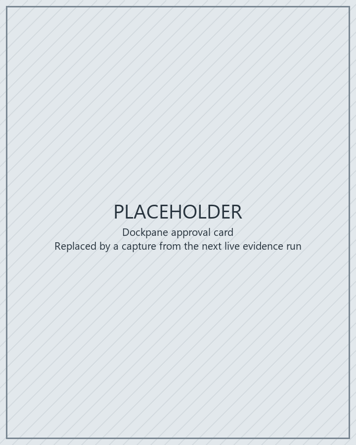
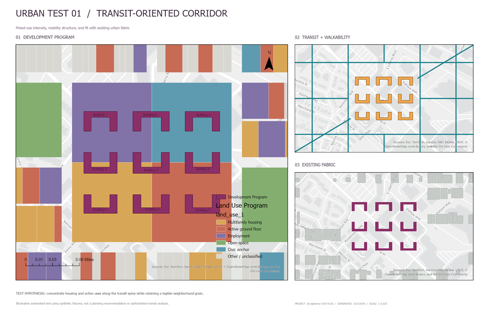
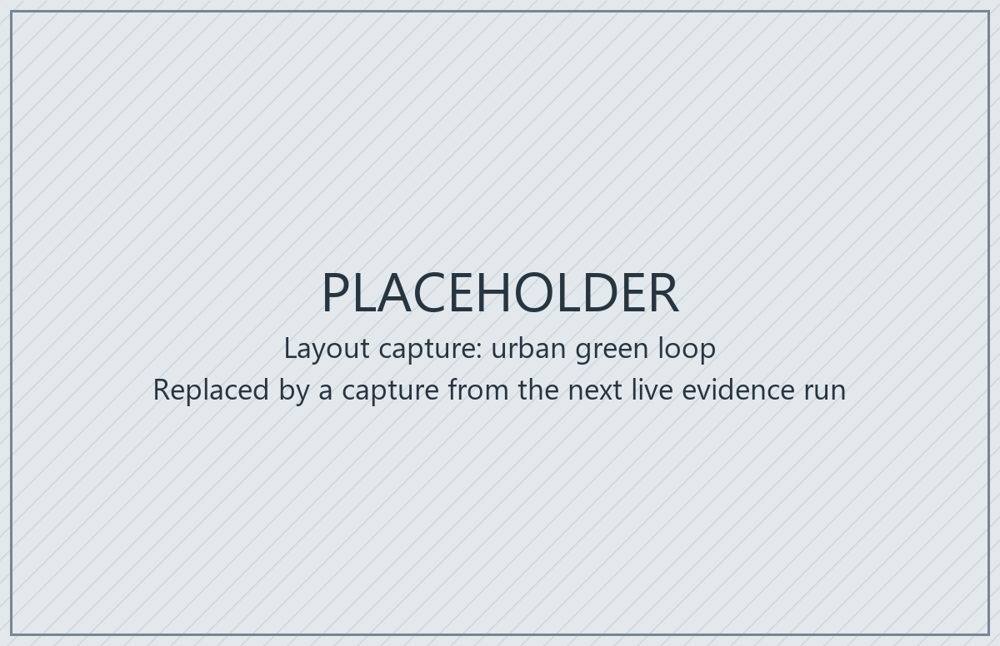
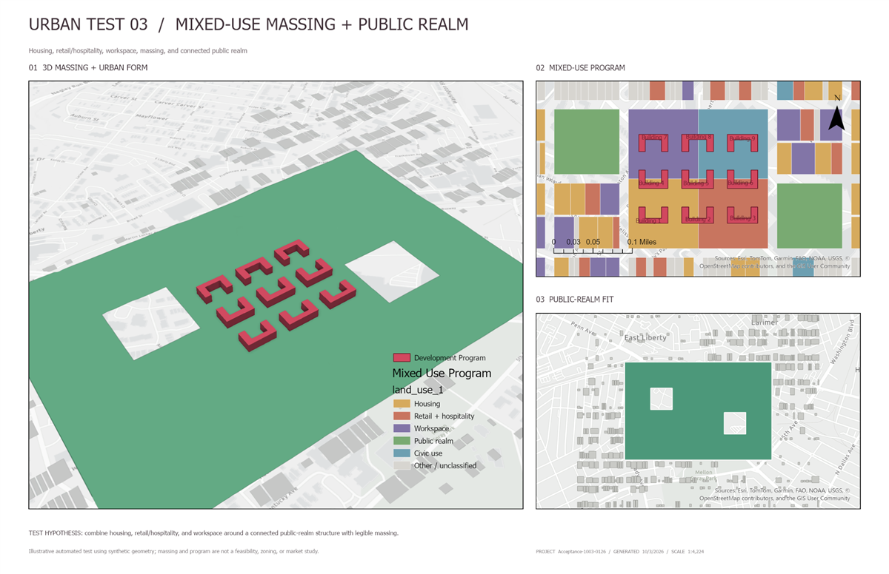

MCP server for ArcGIS Pro 3.7
Let a model work in the ArcGIS Pro session you already have open
An ArcGIS Pro add-in and a small stdio MCP gateway. Claude Desktop, Claude Code or any other MCP client calls typed, schema-validated operations by stable id. Every write is checked against the current workspace revision, every risky write waits for a person to approve the exact arguments in a Pro dockpane, and every invocation is audited.
development preview 0.3.1 · unsigned Windows x64, licensed ArcGIS Pro 3.7 (tested on 3.7.1), .NET Runtime 10.x (x64)
The download is ArcGISProMCP-<version>-win-x64-development-preview.zip, for example ArcGISProMCP-0.3.1-win-x64-development-preview.zip, with SHA256SUMS next to it. See the quick start.
How it works
The gateway holds no GIS logic. The add-in does the work, and only the dockpane can approve.
What the model gets
A small set of tools in front of a typed registry
gp.search, gp.describe and gp.runThe model searches the registry by intent, reads an operation's descriptor, validates arguments, and invokes it by id, such as layer.add, symbology.set-unique-values, layout.ensure-surround or view.capture. Operations cover projects and maps, layers and cartography, features, tables and metadata, layouts and observation, and geoprocessing. ArcPy script execution is opt-in.
- MCP structured output: 15 stable-shape operations declare an output schema.
arcgis://resources for project state, operation descriptors, workflows, skills and captured images.- Prompts built from bundled skills and versioned, declarative workflows.
The 16 gateway tools
- system_get_state
- registry_search
- registry_browse
- registry_describe
- registry_validate
- registry_invoke
- approval_request
- approval_status
- approval_cancel
- workflow_list
- workflow_get
- workflow_save
- workflow_run
- resource_read
- skill_search
- skill_get
Safety model
Writes name the revision they read. Risky writes wait for a person.
| Risk tier | What it takes to run |
|---|---|
| ReadOnly | Runs freely. |
| SafeWrite | The current workspace revision. A stale revision is rejected before anything runs. |
| Destructive | Revision plus a single-use approval token from the dockpane. |
| ExternalSideEffect | Revision plus a single-use approval token from the dockpane. Every gp.run is in this tier. |
approval_requestqueues a card in the dockpane. A person approves or denies it, andapproval_statusreturns a short-lived token bound to the operation, its version, the exact arguments and the revision. The gateway cannot approve its own request.gp.runcards warn when a tool modifies input in place, consumes credits or runs user code. Allowlisted read-only tools run throughgp.querywithout review.- A dry run validates statically, never executes and never consumes a token.
- Every invocation, approval decision and autonomous bypass is appended to a JSON-lines audit log.
- Autonomous mode is an opt-in expert setting and is not recommended. It still refuses Destructive, user-code and unclassified
gp.runrequests without a person-issued token.
gp.run can execute arbitrary Python through Python toolboxes, script tools and expressions, with your GIS authority. Read security and limits before connecting a client you do not fully trust.

arcpy.run-script in the dockpane during the live operation matrix. The card names the operation, its risk and the revision it is bound to, shows a "Runs user code" warning, and links to the full arguments.Quality
945 tests, measured search, pinned CI
Build: .NET 10 with TreatWarningsAsErrors and 0 warnings. Tests use xUnit v3; the portable tests do not need ArcGIS Pro.
| Test project | Tests |
|---|---|
Core.TestsExecutor policy, approvals, schemas, search, risk tiers, workflows, audit | 490 |
Operations.TestsOperation behaviour over fake ArcGIS services | 246 |
Server.TestsMCP contract snapshots, end-to-end runs, trajectories | 123 |
Bridge.TestsPipe framing, discovery, host scheduling | 67 |
Evals.TestsRetrieval suites gated on a measured baseline | 19 |
| Total | 945 |
| Search suite | Tasks | recall@5 |
|---|---|---|
| Registry search, held out | 16 | 0.938 |
| Geoprocessing search, held out | 16 | 0.875 |
| Registry search | 30 | 0.867 |
| Geoprocessing search | 30 | 0.900 |
Held-out tasks were written before search tuning and never tuned against, so they are the numbers to trust. Geoprocessing suites ran against ArcGIS Pro 3.7.1 with 2,210 system tools. Eight golden trajectories pass on every dotnet test; four of them exercise approval. No live-model scorecard is committed yet. See evals.
CI on GitHub Actions uses actions pinned to commit SHAs and read-only permissions: build and test on Windows, a packaging job that fails if development-only hosts reach the bundle, and a lint job.
Live evidence
Recorded on a real ArcGIS Pro 3.7.1 session
tools/run-acceptance.ps1 records the commit, the ArcGIS Pro version and the hashes of the built and loaded add-in DLLs into a dated folder under docs/acceptance, and a test validates every committed folder against the evidence contract. The latest committed run, docs/acceptance/2026-10-03-e7deee2 (version 0.3.0 at commit e7deee2, a private-history SHA; public commit c976c51, see Public history; ArcGIS Pro 3.7.1.1904), covers the three bundled urban workflows and the full operation matrix on synthetic test data in default mode. The layouts below are its captures.
The approval cards in that run were decided by Claude, operating the dockpane through computer use at the maintainer's direction, not clicked by the maintainer. The run shows that a card gates each risky call and that approve and deny behave as specified; it does not test a human reviewer's judgement. During the final project.open card, ArcGIS Pro's modal "Save all edits?" prompt appeared because feature edits were pending, and was answered the same way; that hang is fixed after the evidence commit (project.open now refuses with pending_edits).






Covered by the latest committed run
- Release build, every test project and the package contents
- The four loaded add-in DLLs match the package
- Host probe (41 operations) and the MCP smoke test (16 tools)
- Three bundled workflows, three runs each, layouts inspected (cosmetic legend and scale-bar overlaps recorded)
- The live operation matrix: 41 of 41 operations, 90 of 90 cases passed (58 happy paths, 32 negative cases), eight dockpane approval cards with 7 approved and 1 denied
- Default mode, no autonomous bypass
Not covered
- Autonomous mode
- The separate feature, geoprocessing and ArcPy section of the acceptance script (not selected for this run; the operation matrix exercises those operations one by one)
- A person deciding the approval cards (see the note above)
For anything a run does not cover, use the manual acceptance checklist on your own installation.
Quick start
Install the add-in, point your client at the gateway
Requirements: Windows x64, a licensed ArcGIS Pro 3.7 (tested on 3.7.1), and the .NET Runtime 10.x (x64) from dotnet.microsoft.com (the Runtime, not the SDK). To check, run dotnet --list-runtimes and look for a Microsoft.NETCore.App 10. line. The steps use version 0.3.1 as the example; the same steps ship as INSTALL.txt in the zip.
Download and verify
From the latest release, download
ArcGISProMCP-0.3.1-win-x64-development-preview.zipandSHA256SUMS. In PowerShell, in that folder, check the zip before extracting it:$zip = 'ArcGISProMCP-0.3.1-win-x64-development-preview.zip' $expected = (Select-String -Path .\SHA256SUMS -SimpleMatch $zip).Line.Split(' ')[0] if ((Get-FileHash $zip -Algorithm SHA256).Hash -eq $expected) { 'OK' } else { 'MISMATCH - do not install' }Unblock and extract into
C:\ArcGISProMCP\Unblock-File $zip Expand-Archive $zip -DestinationPath C:\ArcGISProMCPOr right-click the zip > Properties > Unblock, then Extract All to
C:\ArcGISProMCP. The zip has one root folder, so the gateway is atC:\ArcGISProMCP\ArcGISProMCP-0.3.1-win-x64-development-preview\server\arcgis-pro-mcp.exe.Install the add-in
Close ArcGIS Pro and double-click
ArcGISProMCP.AddIn.esriAddinXin that folder. The add-in is unsigned: in ArcGIS Pro, Project > Add-In Manager > Options, choose Load all Add-Ins without restrictions and restart ArcGIS Pro. If the option is greyed out, ask your IT department.Open a disposable project and the pane
Open a disposable copy of a project. On the Add-In tab, click MCP Studio to open the ArcGIS MCP pane; its status should read Ready. Keep it open: approval cards appear there.
Connect your MCP client
Claude Desktop: Settings > Developer > Edit Config (
%APPDATA%\Claude\claude_desktop_config.json). Add the entry insidemcpServers, keeping any servers already there, then quit Claude Desktop from its tray icon and start it again.{ "mcpServers": { "arcgis-pro": { "command": "C:\\ArcGISProMCP\\ArcGISProMCP-0.3.1-win-x64-development-preview\\server\\arcgis-pro-mcp.exe" } } }Claude Code
claude mcp add --scope user arcgis-pro -- "C:\ArcGISProMCP\ArcGISProMCP-0.3.1-win-x64-development-preview\server\arcgis-pro-mcp.exe" claude mcp listVS Code:
.vscode\mcp.json, or MCP: Open User Configuration{ "servers": { "arcgis-pro": { "type": "stdio", "command": "C:\\ArcGISProMCP\\ArcGISProMCP-0.3.1-win-x64-development-preview\\server\\arcgis-pro-mcp.exe" } } }Any other MCP client: run the same path as a stdio server. Do not set
ARCGIS_PRO_MCP_AUTONOMOUS_MODE: it skips the approval cards.Verify
The client lists the
arcgis-proserver with 16 tools. Ask "What project is open in ArcGIS Pro?", then ask for a small edit, such as updating one attribute, and approve the card in the ArcGIS MCP pane.Trouble?
arcgis_unavailablemeans ArcGIS Pro is not running or the add-in did not load.arcgis_host_ambiguousmeans several ArcGIS Pro windows are open: close the extra ones, or add"env": { "ARCGIS_PRO_MCP_HOST_PID": "<pid>" }to the client entry with the PID shown in the pane. If the client says the server failed, check the path and the .NET runtime.
Every client, troubleshooting, upgrade and uninstall: install guide. All settings: reference.
Known limits
What this preview does not do
- The package is unsigned. Wider distribution needs an organizational signing certificate and another verification pass.
- Workflows cannot run confirmation-gated steps in default mode; run those operations one at a time through approval.
- Workflows are not transactional or resumable after a crash, and nothing is rolled back automatically.
- ArcPy and
gp.runcan execute arbitrary user code. Neither is a sandbox. - Revision checks are an optimistic guard, not a lock. Some direct edits in Pro, such as reordering layers, do not invalidate an approval.
- After each write the host waits up to 3 seconds for ArcGIS Pro's event echoes to settle; heavy layout and 3D steps sometimes reach that cap. Reading the final state still waits for Pro's main thread, so while Pro is busy (for example loading a newly added layer) a write can take much longer to return.
- Feature editing excludes batch edits and multipart construction. Advanced renderers, workspace connections and PDF export are outside the registry.
- Idempotency, workflow history and resources do not survive an ArcGIS Pro restart.
The full list: known limits and security and operational limits.